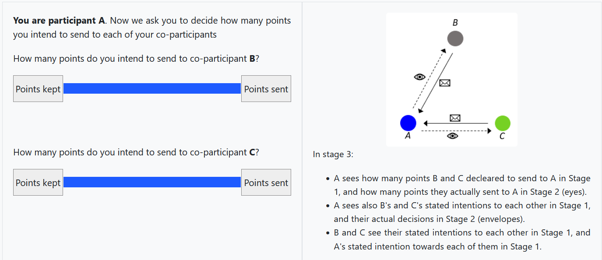
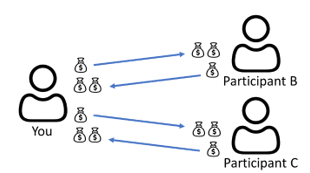

<div class="card bg-light instructions">
    <div class="card-body">

<!-- ISTRUZIONI-->

<div class="row">
   <div class="col-sm-12">
     <div class="alert alert-primary" role="alert" style="text-align:center">
       <h3> INSTRUCTIONS 1 </h3>
     </div>
   </div>
 </div>


        <div class="row">
           <div class="col-sm-12">
             <div style="text-align: justify; font-size: 1.1rem;">

             <p>  In this experiment, you will complete a three-part activity. </p>
             <p>  At the beginning, you will be randomly given one of three roles: <b> A, B, or C. </b> </p>
             <p> Each role will be given to about one third of participants. Your role will stay the same throughout the experiment.</p>
             <p>  You will be part of a small network with two other participants. You will be able to see this network in a separate window on the right-hand side of your screen.</p>
             <p>  Figure 1 below shows what this setup will look like.</p>
               &nbsp
               
               <div style="text-align: left; font-size: 1.0rem;"> Figure 1 </div>
               &nbsp
               &nbsp
             <p> Each person will interact with the two other people in their group at the same time. We call these people your co-participants.</p>
             <p>For example, if you are assigned role A, you will interact with one person assigned role B and one person assigned role C.</p>


           </div>
           </div>
         </div>

         <br>
         <br>

         <div class="row">
            <div class="col-sm-12">
              <div style="text-align: justify; font-size: 1.1rem;">
              <p><strong>      Part 1: Stated intention </strong></p>
            <p>  At the start of Part 1, you will complete an activity with each of your two co-participants. This means you will have two separate interactions: one with each co-participant. Figure 2 shows how this works.</p>
            <p> For each interaction, you start with 10 points. You then decide how many of these 10 points you want to send to your co-participants. Any points you send will be doubled and given to the other person. </p>
            <p> You keep any points that you do not send.</p>

                &nbsp;
                &nbsp;

              
              <div style="text-align: left; font-size: 1.0rem;"> Figure 2 </div>
              &nbsp;
              &nbsp;
              <p>Your co-participants will do the same.</p>
              <p>Your total payment is counted in points. At the end of the experiment, points will be converted into pounds. The exchange rate is: 1 point = £0.10</p>
              <p>For each interaction, your final points for each interaction are calculated as follows:</p>
              </div>
              <br>
              <div style="text-align: justify; font-size: 1.0rem;"><p><p class="math-like">Final Points Won = Your initial 10 points – (points you send) + (double the points sent to you).</p> </div>
              <div style="text-align: justify; font-size: 1.1rem;">
              <br>
              <div style="margin-left: 30px;">
              <p><strong> Example: </strong> </p>
              <p>  Suppose you are A and you are interacting with B. </p>
            	<p>If you send 2 points to B, and B sends 3 points to you, then your final points for this interaction are:</p>
              <p> 10-2+(3×2)=14.</p>
              <p>B’s final points for this interaction are: 10-3+(2×2)=11.</p>
              <p>As another example, if you send 3 points to B, and B sends 4 points to you, then your final points for this interaction are: 10-3+(2×4)=15,</p>
              <p>B’s final points for this interaction are: 10-4+(2×3)=12.</p>
              <br>
              </div>
              <p>This formula is applied separately to each of your interactions with your co-participants.</p>
              <p>In Part 1, you will first be asked how many points you intend to send to each co-participant. Your co-participants will also report how many points they intend to send. After everyone has reported their intentions, you will see your co-participants’ <b> stated intentions </b> on your screen.</p>


              </div>
        </div>
        </div>
        <br>
        <br>
        <div class="row">
           <div class="col-sm-12">
             <div style="text-align: justify; font-size: 1.1rem;">
               <p><strong>Part 2: First decision</strong></p>

               <p> In Part 2, you will decide how many points you will actually send to each of your co-participants. </p>
               <p> You can either:
               <ul>
                 <li> confirm your stated intention from Part 1, or
                 <li> choose a different number of points to send.
               </ul>
               </p>
               <p> All co-participants will make this decision at the same time.</p>
               <p> If you confirm your stated intention, these points will be doubled and sent to the other co-participants. </p>
               <p>If you choose a different amount, this will be implemented instead and the doubled amount given to your co-participants.</p>
       <!-- text for enforcement -->
               <!-- <p>After all players have made their Stage 2 decisions, the implemented decision is determined as follows:</p>
               <ul>
                 <li>There is an XX probability that your decision from Stage 1 is implemented. If this happens, then your Stage 2 choice is ignored.</li>
                 <li>There is an XX probability that your Stage 2 decision is implemented.</li>
              </ul> -->

             </div>
             </div>
           </div>
       </div>


    </div>
  
